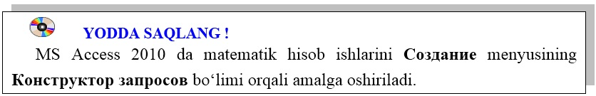

32-DARS. MS ACCESS 2010 DA MATEMATIK AMALLARNI BAJARISH
MS Access 2010 da ma’lumotlar omborini hosil qilib, ular ustida ba’zi – bir matematik hisob – kitob ishlarini amalga oshirishimizga to‘g‘ri keladi. Ushbu ishlarni amalga oshirish matematik va statistik funksiyalar yordamida amalga oshiriladi. Matematik hisob ishlarini Создание menyusining Конструктор запросов bo‘limi orqali amalga oshirishimiz mumkin.
MS Acces 2010 da ham MS Excel 2010 kabi matematik va munosabat amallari, matematik va statistik funksiyalardan, mantiqiy amallardan foydalanish imkoniyatlari mavjud.
1-mashq. Uchta ustunda berilgan sonlarning yig‘indisini to‘rtinchi ustunga hosil qiling.
Bajarish:
• jadval quyidagicha hosil qilinadi:
• hosil qilingan jadvalni “Qo‘shish” nomi bilan saqlaymiz;
• saqlangan jadvalni yuklanadi va quyidagi tartibda to‘ldiriladi:
• to‘ldirilgan jadvalni yopib, menyular satridan СозданияКонструкор запросов ketma-ketligi tanlanadi;
• “Qo‘shish” nomli jadval belgilanadi va Добавить tugmasi bosiladi.
• ishchi oynani quyidagicha to‘ldiramiz:
• jadvalning navbatdagi ustunga sichqonchaning o‘ng tugmasini bosib kontekst menyudan построить bandi tanlanadi:
• hosil bo‘lgan oyna ikki qismdan iborat bo‘lib, birinchi oynada matematik hisob ishlarining formulalari kiritiladi. Ikkinchi oynada matematik, statistik funksiyalar va mantiqiy amallarni qo‘llash usullari beriladi. Berilgan uchta ustundagi sonlarning yig‘indisi uchunchi ustunda hosil qilish uchun birinchi oynaga quyidagi kodni kiritamiz: A+B+C: [A]+[B]+[C]
• bajarilgan amallarni “Sonlarni qo‘shish” nomi bilan saqlab, jadvalni yuklasak, quyidagi ko‘rinish hosil bo‘ladi:
Ushbu jadvalning uchta ustunidagi sonlarning yig‘indisi to‘rtinchi ustunda aks etgan.

1. MS Access 2010 da qanday matematik amallari mavjud?
2. MS Access 2010 da qanday munosabat amallari mavjud?
3. MS Access 2010 da matematik funksiyalarni yozing.
4. MS Access 2010 da statistik funksiyalarni yozing.
5. MS Access 2010 da mantiqiy amallarni yozing.
6. Berilgan to‘rtta sonning ko‘paytmasini hisoblovchi jadval hosil qiling.
7. Ustundagi sonlarning ildizini hisoblovchi jadval hosil qiling.

1. Ustundagi sonlarning kosinusini hisoblovchi jadval hosil qiling.
2. Ustundagi sonlarning o‘rta qiymatini hisoblovchi jadval hosil qiling.